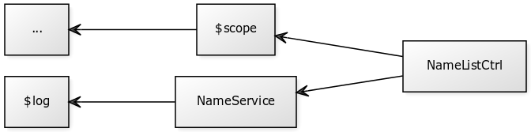

Introduction to AngularJS
Design Overview
The Zen of Angular
"Angular is built around the belief that declarative code is better than imperative when it comes to building UIs and wiring software components together, while imperative code is excellent for expressing business logic."
Design goals
- Decouple DOM manipulation from app logic (→ testability)
- Regard application testing as equal in importance to application writing (testing difficult affects code structuring)
- Decouple server side and client side (→ reusability, testability)
- Guide developers (UI design → business logic → testing)
Use Cases
Angular Sweet Spot
"Angular was built for the CRUD application in mind. Luckily CRUD applications represent the majority of web applications." 2
Application examples:
Use of AngularJS for GUI editors and games is specifically discouraged 2
HTML5/Hybrid Mobile Applications
- SPAs are loaded only once → more native-like experience in mobile devices
- Mobile Angular UI - a mobile-optimized version of Angular on top of Bootstrap 3 (improved performance, mobile-friendly controls with swipe support, offcanvas menus, etc.)
- Ionic framework - AngularJS-based framework for creating hybrid mobile applications
Rapid prototyping / scaffolded app generation
- High productivity prototyping
- Frontend stack: Yeoman + Bootstrap + Angular
- Full stack: mean.io
When You Should Not Use Angular
- You already happily use another SPA framework :)
- You need specific JavaScript components that are laborous to integrate with Angular
- You need a lightweight application and/or need to make an embeddable application
- When you require server-side rendering or search engine visibility (OK there are solutions, but they will be tricky)
Concepts and Getting Started
Bootstrap and Initialization
Minimal Angular App
<!doctype html>
<html ng-app>
<body>
<script src="angular.js"></script>
</body>
</html>
- Include angular.js
- Mark your application part of DOM with ng-app
Example
jsfiddle.net/jsalonen/Z9XC9/
<div ng-app>
1 + 2 * 3 = {{1 + 2 * 3}}
</div>
<div>
1 + 2 * 3 = {{1 + 2 * 3}}
</div>
Automatic Initialization

Automatic Initialization
ngApp in Detail
- Automatically initialize Angular after document has loaded
- Look for
ng-appattribute in the DOM hierarchy - If a module was referenced, load it
- Create application injector
- Compile DOM that resides inside the element containg
ng-appattribute
Manual Initialization
Omit ng-app to manually orchestrate initialization
<!doctype html>
<html>
<body>
Hello {{'World'}}!
<script src="http://code.angularjs.org/angular.js"></script>
<script>
angular.element(document).ready(function() {
angular.module('myApp', []);
angular.bootstrap(document, ['myApp']);
});
</script>
</body>
</html>- element = angular.element ("Wraps a raw DOM element or HTML string as a jQuery element")
- angular.bootstrap invokes compile to turn the element into an executable, bi-directionally bound application.
Scopes and Data Binding
Angular provides Two-Way Data Binding

- Changes to DOM trigger model (scope) updates
- And the other way around: scope updates are reflected in DOM
Data Binding Example
jsfiddle.net/jsalonen/ZWu2s/
<div ng-app ng-init="firstname='John'; lastname='Doe';">
<div>
<input type="text" ng-model="firstname">
<input type="text" ng-model="lastname">
<div>
<h1>Hello {{firstname + " " + lastname}}
</div>Data Binding Glues Models to Views

- Initialize model variables with ng-init directive
- Bind variables to view with ng-model directive
- No distinct model object - data is stored inside scope along with functions
Controllers
- Controller: a JavaScript construction function that is used to augment the scope
- The augmented scope inherits all properties from upper-level scope (top-level is $rootScope)
- ng-controller: directive that calls the construction function for the named controller
- Controller-augmented scope is only visible inside the HTML block that declares ng-controller
jsfiddle.net/jsalonen/nB4WU/
function NameListCtrl($scope) {
$scope.title = "Participants";
$scope.names = ['Jaakko', 'Tapio', 'Juha'];
}<div ng-app>
<div ng-controller="NameListCtrl">
<h1>Participants</h1>
<ol>
{{name}}
</ol>
</div>
</div>
(ng-repeat: directive to instantiate template once per item from a collection)
Controller inside Controller
jsfiddle.net/jsalonen/tj78j/
function ParticipantCtrl($scope) {
$scope.title = "Participants";
}
function NameListCtrl($scope) {
$scope.title = "List";
$scope.names = ['Jaakko', 'Tapio', 'Juha'];
}
<div ng-app>
<div ng-controller="ParticipantCtrl">
<h1>Participants</h1>
<ol ng-controller="NameListCtrl">
{{name}} (in list {{title}})
</ol>
</div>
</div>
Expressions
Expression
- JavaScript-like code snippets, mainly used for data binding
- Usually placed in bindings like:
{{ expression }} - Are re-evaluated when bindings change
Different from JavaScript Expressions
- Evaluated against scope object (not window)
- Silently handle
undefinedandnullvalues - You cannot use control flow statements
- Parsed with $parse, not with
eval(=safer)
Expression Examples
Some simple math with values from scope:
{{ savings + income - moneySpent }}{{ 3.14 * radius * radius }}String concatenation with null / undefined values:
{{ "hello" + null + undefined + "world!" }}Filters
- Filters perform data transformation (similar in spirit to UNIX pipe (
|) filters - Filters can and are often chained
- Examples:
- filter a list by search string
- format data according to a data type or locale
- convert data into a specific format (e.g.
jsonfilter)
Using Filters in View Templates
Typical usage: apply filters to expressions in view templates:
{{ expression | filter }}
Filter chaining:
{{ expression | filter1 | filter 2 }}
With arguments
{{ expression | filter1:arg1:arg2 }}
Examples of Built-in Filter Usage
jsfiddle.net/jsalonen/QH9yw/
Uppercasing:
{{name|uppercase}}Currency formatter:
{{salary|currency:"€"}}More built-in filters: lowercase, date, filter, json, limitTo, number, orderBy
Example:
Simple filter-based search
jsfiddle.net/jsalonen/9c8Tz
Template (with search filter):
<div ng-controller="ParticipantsCtrl">
<p>Search participants:
<ol>
<li ng-repeat="participant in participants | filter:search">
{{participant.name}}
</li>
</ol>
</div>
Controller (with orderBy filter):
function ParticipantsCtrl($scope, $filter) {
var participants = [{name: 'Jaakko'}, {name: 'Aaro'}, ...];
$scope.participants = $filter('orderBy')(participants, 'name');
}Modules
Modules - What and Why?
- Modules are a declarative approach to the ubiquitous (and imperative) "main" method
- Angular applications are defined as Modules
- Also: package third-party code as reusable modules
- Modules improve testability
Angular Application as a Module
jsfiddle.net/jsalonen/vAEnU
Declaring a module:
var myAppModule = angular.module('myApp', []);
Refer to myApp in your ng-app directive:
<html ng-app="myApp">...</html>Usage Example: Modular Controllers
(The right way of using controllers)
jsfiddle.net/jsalonen/SdXG8/
<div ng-app="myApp">
<div ng-controller="NameListCtrl">
<h1>Participants
<ol>
<li ng-repeat="name in names">{{name}}
</ol>
</div>
</div>var myApp = angular.module('myApp',[]);
myApp.controller('NameListCtrl', function($scope) {
$scope.names = ['Jaakko', 'Tapio', 'Juha'];
});Dependency Injection and Services
Dependency Injection (DI)
- Individual components in Angular are glued together with dependency injection
- DI is pervasively used in Angular to decouple components
- Whenever possible use DI mechanisms for specifying component dependencies
Dependency Injection in Action
jsfiddle.net/jsalonen/1y13xc2j/
angular
.module('myApp',[])
.controller('ParticipantsCtrl', function($scope, $log) {
var pickRandomName = function(names) {
var name = names[Math.floor(Math.random()*names.length)];
$log.log('Picked random name: ' + name);
return name;
};
$scope.participants = ['Jaakko', 'Tapio', 'Aapee'];
$scope.addRandomName = function() {
$scope.participants.push(
pickRandomName(['Jussi', 'Arto', 'Matti'])
);
};
});
Angular Services
- Angular services = substituable objects that are wired together using dependency injection
- Use services to organize and share code across your application
- General-purpose services are provided by Angular
Dependency Injection in Action - With Service
jsfiddle.net/jsalonen/8wmgvxxz/
angular
.module('myApp',[])
.service('NameService', function($log) {
this.pickRandomName = function(names) {
var name = names[Math.floor(Math.random()*names.length)];
$log.log('Picked random name: ' + name);
return name;
};
})
.controller('ParticipantsCtrl', function($scope, NameService) {
$scope.participants = ['Jaakko', 'Tapio', 'Aapee'];
$scope.addRandomName = function() {
$scope.participants.push(
NameService.pickRandomName(['Jussi', 'Arto', 'Matti'])
);
};
});
Dependency graph
Alternative: make services using Factory method
.factory('NameService', function() {
return {
pickRandomName: function(names) {
...
}
};
});factory generates services just like service -
useful especially when your service object is generated
Directives
Directive
- A behaviour or DOM transformation, which is triggered by the presence of a custom attribute, element name, class name or comment
- Allows you to extend the HTML vocabulary in a declarative fashion.
- Multiple directives have already been introduced
(can you recall them?) - Simple example:
ngHide= hide/show element based on expression - A more advanced example: make content editable with
contentEditable="true"attribute.
Directive Matching
Example:
<input ng-click="action()">ng-click is matched with ngClick directive due to normalization:
- Strip
x-anddata-from element/attribute name prefix - Convert
.,-and_delimited names tocamelCase
Best practice: use dash-delimited format in your names
Directive Matching Types
- E - Element names (
<my-dir></my-dir>) - A - Attributes (
<h1 my-dir="exp"><h1>) - C - Classes (
<div class="my-dir"></div>)
Note: prefer tag name directives
Registering directive bindings (link)
function link(scope, element, attrs) { ... }- scope is an Angular scope object.
- element is the jqLite-wrapped element that this directive matches.
- attrs is a hash object with key-value pairs of normalized attribute names and their corresponding attribute values.
Example: mouseHighlighter Directive
jsfiddle.net/jsalonen/b6dB2
.directive('mouseHighlighter', function() {
return {
link: function(scope, element, attrs) {
element.bind('mouseenter', function() {
element.addClass('highlight');
});
element.bind('mouseleave', function() {
element.removeClass('highlight');
});
}
}
});Example: participant list as directive
jsfiddle.net/jsalonen/4hgx6hnj/2/
Example: barchart directive
jsfiddle.net/jsalonen/A3dJW/
Notes:
- restrict: 'E' - Only allow element directives
- template: '...' - Custom template for directive
- scope: {...} - Bind attribute values to
- link: ... - Parse and clean values
References and further reading
AngularJS Developer Guide
More information on concepts, conventions, etc.
AngularJS API Reference
The canonical reference for Angular core implementation
Egghead.io
Probably the best video tutorials in the web for Angular